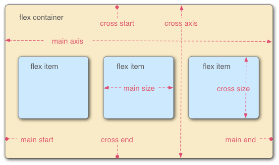

flex布局
布局的传统解决方案，基于盒状模型，依赖 display属性 + position属性 + float属性。它对于那些特殊布局非常不方便，比如，垂直居中就不容易实现。
2009年，W3C提出了一种新的方案—-Flex布局，可以简便、完整、响应式地实现各种页面布局。目前，它已经得到了所有浏览器的支持，这意味着，现在就能很安全地使用这项功能。
Flex布局是什么?
Flexible Box的缩写，弹性布局 为盒状模型提供最大的灵活性
任何一个容器都可以指定Flex布局
.box{ |
行内元素也可以使用Flex布局
.box{ |
Webkit内核的浏览器，必须加上-webkit前缀 ：display：-webkkit-flex
.box{ |
概念：
采用Flex布局的元素，称为Flex容器（flex container）简称容器。
他的所有子元素自动成为容器成员，称为Flex项目（flex item）简称项目。

容器默认存在两根轴：水平的主轴（main axis）和垂直的交叉轴（cross axis）
主轴 ： main axis， 主轴开始、结束位置 main start 、main end， 占据主轴空间：main size
交叉轴：cross axis，交叉轴开始、结束位置 cross start、 corss end，占据的交叉轴空间：cross size
项目默认沿主轴排列。
容器属性：
以下6个属性设置在容器上：
- flex-direction 主轴方向 row | row-reverse | column | column-reverse
- flex-wrap 轴线排不下如何换行 norwap | wrap | wrap-reverse
- flex-flow flex-direction属性和flex-wrap属性的简写形式，默认值为row nowrap
- justify-content 项目在主轴上的对齐方式 flex-start | flex-end | center | space-betwen | space-around
- align-items 项目在交叉轴上如何对齐 flex-start | flex-end | center | baseline | stretch
- align-content 多根轴线的对齐方式 flex+start | flex-end | center | space-betwen |space-around | stretch
项目属性：
以下6个属性设置在项目上：
- order : 项目的排列顺序。数值越小排列越靠前，默认0
- flex-grow : 项目的放大比例，默认0：如果存在剩余空间也不放大
- flex-shrink ： 项目的缩小比例，默认1：如果空间不足将缩小。
- flex-basis ： 再分配多余空间之前项目占据的主轴空间。 默认值auto：项目本来大小。浏览器根据这个属性计算主轴是否有多余空间。
- flex ：flex-grow、flex-shrink、flex-basis的简写。默认：0 1 auto ，后两个属性可选。两个快捷键：auto（1 1 auto）和none（0 0 auto）
- align-self ： 允许单个项目由于其他项目不一样的对齐方式，可覆盖align-items属性，默认值为auto，表示继承父元素的align-items属性，若没有父元素，则等同于stretch。属性： auto | flex-start | flex-end | center | baseline | stretch 除了auto，其他都与align-items属性完全一致。
本博客所有文章除特别声明外，均采用 CC BY-NC-SA 4.0 许可协议。转载请注明来自 title！